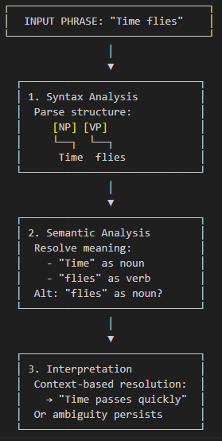

Natural Language Processing
Developing a natural language parsing model involves tasks such as tokenization, parsing, and possibly dealing with ambiguous or erroneous inputs.
Natural language processing is a complex field that goes beyond just programming. It involves knowledge of linguistics, and many parsing tasks can be difficult due to the ambiguity and complexity of natural languages. You may want to look into existing tools and libraries specifically designed for natural language processing, like NLTK or SpaCy for Python, in addition to the general-purpose libraries that Boost offers.
Libraries
-
Boost.Spirit: This is Boost’s library for creating parsers and output generation. It includes support for creating grammars, which can be used to define the structure of sentences in English, or other language. You can use it to tokenize and parse input text according to your grammars.
-
Boost.Phoenix: A library for functional programming, it supports the ability to create inline functions which can be used for defining semantic actions.
-
Boost.Regex: For some simpler parsing tasks, regular expressions can be sufficient and easier to use than full-blown parsing libraries. You could use Boost.Regex to match specific patterns in your input text, like specific words or phrases, word boundaries, etc.
-
Boost.String_Algo: Provides various string manipulation algorithms, such as splitting strings, trimming whitespace, or replacing substrings. These can be useful in preprocessing text before parsing it.
-
Boost.Optional and Boost.Variant: These libraries can be helpful in representing the result of a parsing operation, which could be a successful parse (yielding a specific result), an error, or an ambiguous parse (yielding multiple possible results).
-
Boost.MultiIndex: Provides data structures that can be indexed in multiple ways. It can be useful for storing and retrieving information about words or phrases in your language model, such as part of speech, frequency, or possible meanings.
-
Boost.PropertyTree or Boost.Json: These libraries can be useful for handling input and output, such as reading configuration files or producing structured output.
- Note
-
The code in this tutorial was written and tested using Microsoft Visual Studio (Visual C++ 2022, Console App project) with Boost version 1.88.0.
Natural Language Processing Applications
Natural language parsing (NLP) is a foundational technology that powers many more applications and is a hot area of research and development.
-
Search Engines: Search engines like Google extensively use natural language processing to understand the intent behind user queries and provide accurate and relevant search results.
-
Machine Translation: Services like Google Translate and DeepL rely on natural language parsing for their operation. These services can now translate text between many different languages with surprising accuracy.
-
Speech Recognition: Virtual assistants like Apple’s Siri, Amazon’s Alexa, Google Assistant, and Microsoft’s Cortana, use natural language parsing to understand voice commands from users.
-
Text Summarization: This is used in a variety of contexts, from generating summaries of news articles, scientific papers, to creating summaries of lengthy documents for quicker reading.
-
Sentiment Analysis: Businesses use NLP to gauge public opinion about their products and services by analyzing social media posts, customer reviews, and other user-generated content.
-
Chatbots and Virtual Assistants: NLP is key to the operation of automated chatbots, which are used for everything from customer service to mental health support.
-
Information Extraction: Companies use NLP to extract specific information from unstructured text, like dates, names, or specific keywords.
-
Text-to-Speech (TTS): Services that convert written text into spoken words often use natural language processing to ensure proper pronunciation, intonation, and timing.
-
Grammar Checkers: Tools like Grammarly use natural language processing to correct grammar, punctuation, and style in written text.
-
Content Recommendation: Platforms like YouTube or Netflix use NLP to analyze the content and provide more accurate and personalized recommendations.
Simple English Parsing Sample
Say we wanted to parse a subset of the English language, only sentences of the form: The <adjective> <noun> <verb>. Example sentences are "The quick fox jumps." or "The lazy dog sleeps."
If the input matches this grammar, the following parser will accept it. Otherwise, it rejects the input.
#include <iostream>
#include <boost/spirit/include/qi.hpp>
namespace qi = boost::spirit::qi;
bool parseSentence(const std::string& input) {
// Grammar: The <adjective> <noun> <verb>.
qi::rule<std::string::const_iterator, std::string()> word = +qi::alpha;
qi::rule<std::string::const_iterator, std::string()> article = qi::lit("The");
qi::rule<std::string::const_iterator, std::string()> adjective = word;
qi::rule<std::string::const_iterator, std::string()> noun = word;
qi::rule<std::string::const_iterator, std::string()> verb = word;
// Full sentence rule
qi::rule<std::string::const_iterator, std::string()> sentence =
article >> qi::lit(' ') >> adjective >> qi::lit(' ') >> noun >> qi::lit(' ') >> verb >> qi::lit('.');
auto begin = input.begin(), end = input.end();
bool success = qi::parse(begin, end, sentence);
return success && (begin == end); // Ensure full input is consumed
}
int main() {
std::string input = "";
while (input != "exit")
{
std::cout << "Enter a sentence (format: The <adjective> <noun> <verb>.) Enter exit to quit.\n";
std::getline(std::cin, input);
if (input == "exit")
break;
if (parseSentence(input)) {
std::cout << "Valid sentence!\n";
}
else {
std::cout << "Invalid sentence.\n";
}
}
return 0;
}- Note
-
In this code spaces have to be explicitly entered in the grammar rule. The next example shows how to skip spaces.
The following shows a successful parse:
Enter a sentence (format: The <adjective> <noun> <verb>.) Enter exit to quit.
The happy cat purrs.
Valid sentence!And the following shows an unsuccessful parse:
Enter a sentence (format: The <adjective> <noun> <verb>.) Enter exit to quit.
A small dog runs.
Invalid sentence.Our subset is clearly very limited, as simply replacing the word "The" with "A" results in an error, and a "sentence" such as "The xxx yyy zzz." is valid.
Add a Dictionary of Valid Words
The following example shows how to create a vocabulary of valid words, and allow optional adjectives and adverbs.
The parsing makes repeated use of statements such as -adj_syms[phoenix::ref(adj1) = qi::_1], which in English means "Try to match an adjective from adj_syms. If one is found, store it in adj1. If not found, continue without error.". This functionality is a feature of Boost.Phoenix, the statement attaches a semantic action to adj_syms, so that whenever a match occurs, it will execute adj1 = matched_value. The unary minus in front of adj_syms means this match is optional.
#include <boost/spirit/include/qi.hpp>
#include <boost/spirit/include/phoenix.hpp>
#include <iostream>
namespace qi = boost::spirit::qi;
namespace ascii = boost::spirit::ascii;
namespace phoenix = boost::phoenix;
// Helper to populate symbol tables
template <typename SymbolTable>
void add_words(SymbolTable& symbols, const std::vector<std::string>& words) {
for (const auto& word : words) {
symbols.add(word, word);
}
}
int main() {
// Word categories
std::vector<std::string> determiners = { "The", "A", "My" };
std::vector<std::string> nouns = { "fox", "dog", "cat", "squirrel" };
std::vector<std::string> verbs = { "jumps", "chased", "caught", "scared" };
std::vector<std::string> adjectives = { "quick", "lazy", "sneaky", "clever" };
std::vector<std::string> adverbs = { "loudly", "quickly", "angrily", "silently" };
// Symbol tables for parsing
qi::symbols<char, std::string> dets, noun_syms, verb_syms, adj_syms, adv_syms;
add_words(dets, determiners);
add_words(noun_syms, nouns);
add_words(verb_syms, verbs);
add_words(adj_syms, adjectives);
add_words(adv_syms, adverbs);
// Input
std::string input = "";
while (input != "exit")
{
std::cout << "Enter a sentence (format: <Determiner> [<adjective>] <noun> [<adverb>] <verb> [<adjective>] <noun>.) Enter exit to quit.\n";
std::getline(std::cin, input);
if (input != "exit")
{
// Iterators
auto begin = input.begin();
auto end = input.end();
// Output fields
std::string det1, adj1, noun1, adv, verb, adj2, noun2;
// Grammar: Determiner [adjective] noun [adverb] verb [adjective] noun.
bool success = qi::phrase_parse(
begin, end,
(
dets[phoenix::ref(det1) = qi::_1] >>
-adj_syms[phoenix::ref(adj1) = qi::_1] >>
noun_syms[phoenix::ref(noun1) = qi::_1] >>
-adv_syms[phoenix::ref(adv) = qi::_1] >>
verb_syms[phoenix::ref(verb) = qi::_1] >>
-adj_syms[phoenix::ref(adj2) = qi::_1] >>
noun_syms[phoenix::ref(noun2) = qi::_1] >>
qi::lit('.')
),
ascii::space
);
// Result
if (success && begin == end) {
std::cout << "\nParsed successfully!\n";
if (!det1.empty()) std::cout << " Determiner: " << det1 << "\n";
if (!adj1.empty()) std::cout << " Adjective 1: " << adj1 << "\n";
std::cout << " Noun 1: " << noun1 << "\n";
if (!adv.empty()) std::cout << " Adverb: " << adv << "\n";
std::cout << " Verb: " << verb << "\n";
if (!adj2.empty()) std::cout << " Adjective 2: " << adj2 << "\n";
std::cout << " Noun 2: " << noun2 << "\n";
}
else {
std::cout << "\nParsing failed.\n";
}
}
}
return 0;
}- Note
-
The
ascii::spaceparameter indicates that spaces should be skipped.
The following shows a successful parse:
> My cat scared lazy squirrel.
Parsed successfully!
Determiner: My
Noun 1: cat
Verb: scared
Adjective 2: lazy
Noun 2: squirrelAdd Detailed Error Reporting
Let’s not forget to provide useful comments and error messages:
#include <boost/spirit/include/qi.hpp> // Boost.Spirit Qi — parsing framework
#include <boost/spirit/include/phoenix.hpp> // Boost.Phoenix — allows assignment actions in parsers
#include <iostream>
namespace qi = boost::spirit::qi; // Namespace alias for parser components
namespace ascii = boost::spirit::ascii; // Namespace alias for ASCII space skipping, literals, etc.
namespace phoenix = boost::phoenix; // Namespace alias for expression templates used in actions
// -----------------------------------------------------------------------------
// Helper: Adds words into a Qi symbol table
// Each word is added as both key and value, enabling quick lookup and extraction.
// -----------------------------------------------------------------------------
template <typename SymbolTable>
void add_words(SymbolTable& symbols, const std::vector<std::string>& words) {
for (const auto& word : words) {
symbols.add(word, word);
}
}
// -----------------------------------------------------------------------------
// Helper: Validates a word against a known list
// Returns "- valid" or "- invalid" for display when parsing fails.
// -----------------------------------------------------------------------------
std::string is_valid(std::string word, std::vector<std::string> list)
{
if (std::find(list.begin(), list.end(), word) != list.end())
return "- valid";
else
return "- invalid";
}
// -----------------------------------------------------------------------------
// Main function — interactive grammar demo
// Uses Boost.Spirit to parse simple English-like sentences with defined syntax.
// -----------------------------------------------------------------------------
int main() {
// -------------------------------------------------------------------------
// Word categories (predefined vocabulary)
// -------------------------------------------------------------------------
std::vector<std::string> determiners = { "The", "A", "My" };
std::vector<std::string> nouns = { "fox", "dog", "cat", "squirrel" };
std::vector<std::string> verbs = { "jumps", "chased", "caught", "scared" };
std::vector<std::string> adjectives = { "quick", "lazy", "sneaky", "clever" };
std::vector<std::string> adverbs = { "loudly", "quickly", "angrily", "silently" };
// -------------------------------------------------------------------------
// Create Qi symbol tables for each word type
// qi::symbols maps literal strings to stored values — used as grammar terminals.
// -------------------------------------------------------------------------
qi::symbols<char, std::string> dets, noun_syms, verb_syms, adj_syms, adv_syms;
add_words(dets, determiners);
add_words(noun_syms, nouns);
add_words(verb_syms, verbs);
add_words(adj_syms, adjectives);
add_words(adv_syms, adverbs);
// -------------------------------------------------------------------------
// Interactive input loop
// The user can enter sentences repeatedly until typing "exit".
// -------------------------------------------------------------------------
std::string input = "";
while (input != "exit")
{
std::cout << "Enter a sentence (format: <Determiner> [<adjective>] <noun> "
"[<adverb>] <verb> [<adjective>] <noun>.) Enter exit to quit.\n";
std::getline(std::cin, input);
if (input != "exit")
{
// -----------------------------------------------------------------
// Iterator pair used by Boost.Spirit parsers
// -----------------------------------------------------------------
auto begin = input.begin();
auto end = input.end();
// -----------------------------------------------------------------
// Variables to store parsed components of the sentence
// The Phoenix library binds parsed tokens to these variables.
// -----------------------------------------------------------------
std::string det1, adj1, noun1, adv, verb, adj2, noun2;
// -----------------------------------------------------------------
// Grammar definition using Boost.Spirit.Qi
// Sentence pattern:
// Determiner [Adjective] Noun [Adverb] Verb [Adjective] Noun .
// The '>>' operator sequences parsing rules.
// The '-' operator makes a parser optional.
// The '[phoenix::ref(x) = qi::_1]' assigns the parsed value to 'x'.
// -----------------------------------------------------------------
bool success = qi::phrase_parse(
begin, end,
(
dets[phoenix::ref(det1) = qi::_1] >> // Determiner
-adj_syms[phoenix::ref(adj1) = qi::_1] >> // Optional adjective
noun_syms[phoenix::ref(noun1) = qi::_1] >> // First noun
-adv_syms[phoenix::ref(adv) = qi::_1] >> // Optional adverb
verb_syms[phoenix::ref(verb) = qi::_1] >> // Verb
-adj_syms[phoenix::ref(adj2) = qi::_1] >> // Optional adjective
noun_syms[phoenix::ref(noun2) = qi::_1] >> // Second noun
qi::lit('.') // Sentence must end with '.'
),
ascii::space // Skips whitespace automatically
);
// -----------------------------------------------------------------
// Result handling
// If parsing succeeded and the entire string was consumed, show parts.
// Otherwise, report failure and show which words are invalid.
// -----------------------------------------------------------------
if (success && begin == end) {
std::cout << "\nParsed successfully!\n";
if (!det1.empty()) std::cout << " Determiner: " << det1 << "\n";
if (!adj1.empty()) std::cout << " Adjective 1: " << adj1 << "\n";
std::cout << " Noun 1: " << noun1 << "\n";
if (!adv.empty()) std::cout << " Adverb: " << adv << "\n";
std::cout << " Verb: " << verb << "\n";
if (!adj2.empty()) std::cout << " Adjective 2: " << adj2 << "\n";
std::cout << " Noun 2: " << noun2 << "\n";
}
else {
std::cout << "\nParsing failed.\n";
std::cout << "The sentence must be of the form:\n";
std::cout << "<Determiner> [<adjective>] <noun> [<adverb>] <verb> [<adjective>] <noun>.\n";
// Display what parts were recognized and whether valid words were used
if (!det1.empty())
std::cout << " Determiner: " << det1 << is_valid(det1, determiners) << "\n";
if (!adj1.empty())
std::cout << " Adjective 1: " << adj1 << is_valid(adj1, adjectives) << "\n";
std::cout << " Noun 1: " << noun1 << is_valid(noun1, nouns) << "\n";
if (!adv.empty())
std::cout << " Adverb: " << adv << is_valid(adv, adverbs) << "\n";
std::cout << " Verb: " << verb << is_valid(verb, verbs) << "\n";
if (!adj2.empty())
std::cout << " Adjective 2: " << adj2 << is_valid(adj2, adjectives) << "\n";
std::cout << " Noun 2: " << noun2 << is_valid(noun2, nouns) << "\n";
}
}
}
return 0;
}The following shows a successful parse:
> The lazy dog loudly chased quick squirrel.
Parsed successfully!
Determiner: The
Adjective 1: lazy
Noun 1: dog
Adverb: loudly
Verb: chased
Adjective 2: quick
Noun 2: squirrelAnd the following shows an unsuccessful parse:
> The fox chased alligator.
Parsing failed.
The sentence must be of the form:
<Determiner> [<adjective>] <noun> [<adverb>] <verb> [<adjective>] <noun>.
Determiner: The- valid
Noun 1: fox- valid
Verb: chased- valid
Noun 2: - invalidNext Steps
You will notice how adding more features to a natural language parser starts to considerably increase the code length. This is a normal feature of language parsing - a lot of code can be required to cover all the options of something as flexible as language. For an example of a simpler approach to parsing well-formatted input, refer to the sample code in Text Processing.
When designing a natural language system, it is good practice to divide the process into three main steps: syntax analysis (parsing), semantic analysis (grammar), and interpretation. Even though it might be possible to combine some grammar checking with the syntax checking, it is often better practice not to do this but complete the syntax checking first - this makes for greater maintainability and comprehension as the code is developed over time. The final stage, interpretation, usually depends on context. In the following sequence, a phrase as simple as "time flies" contains ambiguity:

The phrase is so widely known it obscures the interpretation of "flies" as a noun. Context is required during interpretation to treat the input as a phrase, and not as something of the form "horse flies". Natural language parsers can remind us of ambiguity when at first we don’t see it!